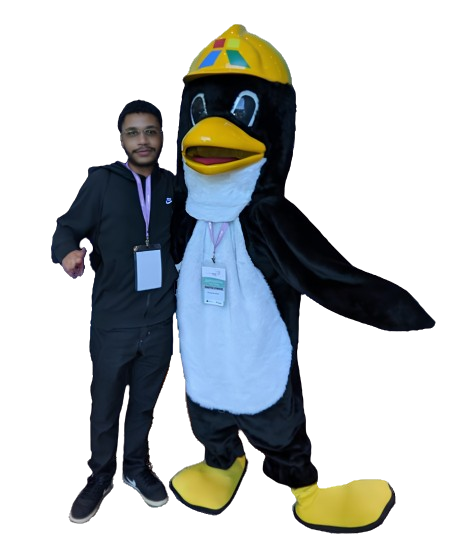

Felipe Moreira
Eu sou
|


Meu nome é Felipe, sou graduado em Sistemas de Informação no IFES - Campus Cachoeiro. Fui estagiário de TI no MESSES, e atualmente estou em busca de novas oportunidades.
Sou Felipe, graduado em Sistemas de Informação pelo IFES - Campus Cachoeiro, com experiência prática em diversas tecnologias. Durante a minha trajetória, tive a oportunidade de atuar como estagiário no MESSES.
Durante a graduação, tive contato com diversas tecnologias, como Java, Python, PostgreSQL, SQLite, HTML, CSS, Bootstrap, React, FastAPI, Jinja, C, Shell Script, R, além de algoritmos complexos, como Teoria dos Grafos, Árvores e Inteligência Artificial. Também adquiri conhecimentos na área de Redes e Sistemas Distribuídos, trabalhando com Linux, Docker, Apache, Git, Nginx, gRPC, Blockchain e RMI. Fora da graduação, participei do reprograme-se, onde aprendi JavaScript, Node.js, Sequelize e Postman. Também possuo conhecimentos em Figma, Photoshop, Canva e Sony Vegas.
Sou graduado em Sistemas de Informação pelo IFES e tenho experiência em diversas tecnologias como Java, Python, PostgreSQL, React, Node.js e Docker. Já atuei como estagiário de TI MESSES, onde trabalhei com manutenção de sistemas, criação de designs, gestão de redes sociais e gestão financeiras.
Nov de 2023 - Dez de 2024
Manutenção e atualização do site: Garantia do funcionamento e atualização do site online.
Criação de designs: Desenvolvimento de materiais visuais alinhados com a identidade da marca.
Gerenciamento de redes sociais: Gerenciamento de conteudo das plataformas digitais.
Fluxo financeiro: Controlar transações financeiras, criar e manter planilhas de fluxo financeiro, gerar boletos e emitir notas fiscais, assegurando a precisão e organização dos registros.
Elaboração de documentação: Criar e manter documentos essenciais.
Jan 2020 - Dez 2024
Durante a graduação, aprendi diversas tecnologias, como Java, Python, PostgreSQL, SQLite, HTML, CSS, Bootstrap,React, FastAPI, Jinja, C, Shell Script, R, Algoritmos complexos, como Teoria dos Grafos, Árvores e Inteligência Artificial. Na área de Redes e Sistemas Distribuídos, Linux, Docker, Apache, Git, Nginx, gRPC, Blockchain e RMI.
Durante a graduação, tive a oportunidade de desenvolver diversos projetos. Alguns deles estão abaixo, no card, para conferência.
Ofereço soluções em desenvolvimento de sistemas, criação de designs, suporte técnico e gerenciamento de projetos, sempre com foco em qualidade e eficiência.
Criar Designers e visualmente atraentes, garantindo uma experiência e considerando a equidade dos usuário .
Criar sites responsivos e visualmente atraentes, garantindo uma experiência de usuário otimizada em todos os dispositivos.
Posso desenvolver aplicações desktop intuitivas e funcionais, focadas em desempenho e uma interface de fácil navegação.
Posso criar interfaces UI/UX intuitivas e agradáveis, garantindo uma experiência de usuário envolvente e uma navegação simples e eficiente.
Posso criar designs gráficos criativos, desenvolvendo materiais visuais que comunicam de forma clara e atraente a mensagem desejada.
Posso gerenciar e trabalhar com dados estruturados, criando soluções eficientes para armazenar, organizar e analisar grandes volumes de informações, garantindo precisão e acessibilidade.
Fique à vontade para me contatar, basta preencher os campos abaixo e entrarei em contato o mais breve possível.
Novo Parque
Cachoeiro de Itapemirim, ES
Brasil
felipemp2014@gmail.com
(+28) 98805 2177